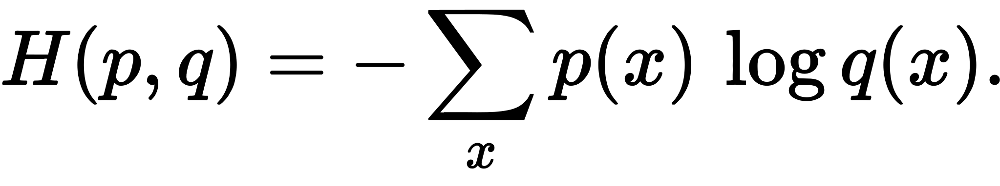

There are a variety of activation functions available for any given neuron. Throughout, we used the Tanh function:
For any given neuron, the output is the average of the inputs as fed through the activation function: each input goes through the tanh function, and their results are summed and then divided by their number.
The main metric used while training the neural networks is the loss - the software attempts to minimize loss, rather than maximimize accuracy. In our software, the networks were configured to use categorical cross entropy as their loss function.
Thus, given p and q as the correct answers and the calculated answers, respectively, the cross entropy is
During training, the software works to minimize the loss function. There are a variety of options for how exactly to do this, but we utilized stochastic gradient descent - essentially limited randomization with attention paid to the loss at any given point. In basic terminology, the software changes the weights across the network by a small, random amount, and then runs the network again. If the loss has decreased, it will continue changing the weights in that direction; if it has increased, it will alter them in a different direction and try again.